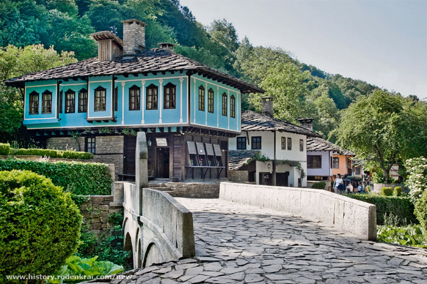
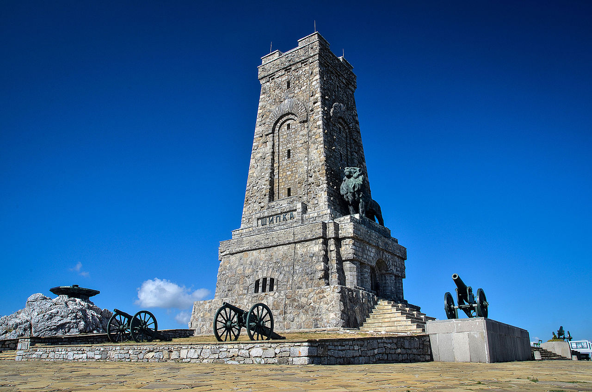

Етър
Уникален архитектурно-етнографски комплекс, представящ българските занаяти.

Дом на хумора и сатирата
Емблематичен културен център на града.

Паметник Шипка
Един от най-значимите исторически паметници в България.

Уникален архитектурно-етнографски комплекс, представящ българските занаяти.
Емблематичен културен център на града.

Един от най-значимите исторически паметници в България.